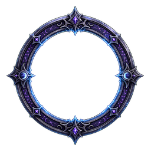
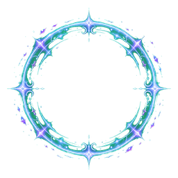

Moonlit Survivors
달빛 생존자
무너진 남청색 폐허에서 루나를 움직여 밤의 군세를 버티고 월식의 기사를 쓰러뜨리세요.
WASD / 방향키 이동 · Enter 시작
Level Up
달빛의 축복 선택
Paused
일시정지
달빛 아래의 시간이 잠시 멈췄습니다.
ESC / P : 계속하기
화면을 다시 정비한 뒤 계속하세요.
Game Over
밤이 루나를 삼켰습니다
Stage Clear
스테이지 클리어
월식의 기사가 쓰러졌습니다.
폐허 너머, 달빛에 침식된 숲이 열립니다.
Victory